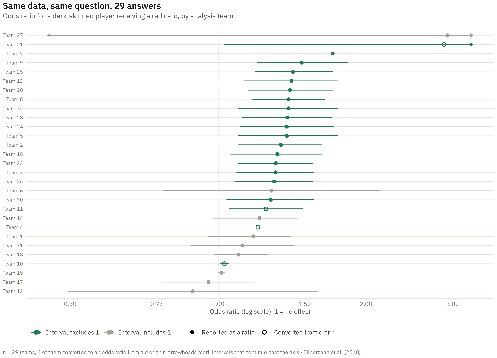

Show the R code
tip <- arrow(length = unit(.055, "in"), type = "closed")
ggplot(plotted, aes(est, rank, colour = sig)) +
geom_vline(xintercept = 1, colour = "#5a5a52", linewidth = .5, linetype = "22") +
# Each interval is drawn as two segments out from the estimate, so the ends
# that run off the axis can carry an arrowhead and the ends that do not can't.
geom_segment(data = ~ filter(.x, !clip_lo), aes(xend = lo_draw, yend = rank), linewidth = .6) +
geom_segment(data = ~ filter(.x, !clip_hi), aes(xend = hi_draw, yend = rank), linewidth = .6) +
geom_segment(data = ~ filter(.x, clip_lo), aes(xend = lo_draw, yend = rank), linewidth = .6, arrow = tip) +
geom_segment(data = ~ filter(.x, clip_hi), aes(xend = hi_draw, yend = rank), linewidth = .6, arrow = tip) +
geom_point(aes(shape = source), size = 2, stroke = .9, fill = NA) +
scale_colour_manual(values = c("Interval excludes 1" = "#1e7c50",
"Interval includes 1" = "#a5a199"),
name = NULL) +
scale_shape_manual(values = c("Reported as a ratio" = 16, "Converted from d or r" = 1),
name = NULL) +
scale_y_continuous(breaks = plotted$rank, labels = paste("Team", plotted$team),
expand = expansion(add = .8)) +
scale_x_log10(breaks = c(0.5, 0.75, 1, 1.5, 2, 3)) +
coord_cartesian(xlim = XLIM) +
guides(colour = guide_legend(order = 1), shape = guide_legend(order = 2)) +
labs(title = "Same data, same question, 29 answers",
subtitle = "Odds ratio for a dark-skinned player receiving a red card, by analysis team",
x = "Odds ratio (log scale). 1 = no effect", y = NULL,
caption = sprintf("n = %d teams, %d of them converted to an odds ratio from a d or an r. Arrowheads mark intervals that continue past the axis · Silberzahn et al. (2018)",
nrow(plotted), sum(plotted$derived))) +
theme(axis.text.y = element_text(size = 7.5), legend.position = "bottom")